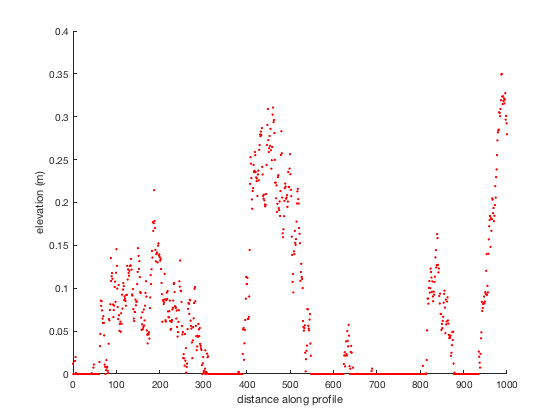

thickness2freeboard documentation
thickness2freeboard is part of Antarctic Mapping Tools for Matlab (Greene et al., 2017). Click here for a complete list of functions in AMT.
thickness2freeboard estimates freeboard height above sea level, from ice thickneess assuming hyrostatic equilibrium.
Contents
Syntax
F = thickness2freeboard(T) F = thickness2freeboard(...,'rhoi',iceDensity) F = thickness2freeboard(...,'rhow',waterDensity) F = thickness2freeboard(...,'rhos',snowDensity) F = thickness2freeboard(...,'Ts',snowThickness)
Description
F = thickness2freeboard(T) estimatesfreeboard height height above sea level F in meters above the geoid from ice thickness T in meters.
F = thickness2freeboard(...,'rhoi',iceDensity) speccifies ice density in kg/m^3. Default ice density is 917 kg/m^3.
F = thickness2freeboard(...,'rhow',waterDensity) specifies water density in kg/m^3. Default water density is 1027 kg/m^3.
F = thickness2freeboard(...,'rhos',snowDensity) specifies snow density in kg/m^3. Default snow density is 350 kg/m^3, however the default snow thickness is 0 m, so the snow density value will only affect calculations if snow thickness is specified.
F = thickness2freeboard(...,'Ts',snowThickness) specifies snow thickness in meters. Default snow thickness is 0 m.
Example 1:
An iceberg is 5 m thick and it's made of pure ice. How high is the iceberg's surface above sea level?
F = thickness2freeboard(5)
F =
0.54
Example 2:
An iceberg is 4.83 m thick, including 40 cm of snow which has a density of 300 kg/m^3. How high is the iceberg's surface above sea level?
F = thickness2freeboard(4.83,'Ts',0.4,'rhos',300)
F =
0.80
And you can go back the other way too:
T = freeboard2thickness(0.8,'Ts',0.4,'rhos',300)
T =
4.83
Example 3: A profile from laser altimetry
Imagine this elevation profile measured by a laser altimeter:
x = 0:1000; % A random profile: z = movmean(randn(size(x)),75); z(z<0) = 0; plot(x,z,'r.') xlabel 'distance along profile' ylabel 'elevation (m)' box off
Where's the ice base? It's the surface minus the thickness:
base = z - freeboard2thickness(z); hold on % Draw the ice: patch([x,fliplr(x)],[base,fliplr(z)],'b','facecolor',rgb('ice blue')) % Draw the water: yl = ylim; % y limits of the axis h = patch([xlim,fliplr(xlim)],[yl(1) yl(1) 0 0],'b',... 'facecolor',rgb('ocean blue')); uistack(h,'bottom') % sends "water" to the back

Citing AMT
If this function or any other part of Antarctic Mapping Tools is useful for you, please cite the paper that describes AMT.
Greene, C. A., Gwyther, D. E., & Blankenship, D. D. Antarctic Mapping Tools for Matlab. Computers & Geosciences. 104 (2017) pp.151-157. doi:10.1016/j.cageo.2016.08.003.
Author Info
This function was written by Chad A. Greene of the University of Texas Institute for Geophysics (UTIG), April 2017, for inclusion in the Antarctic Mapping Tools package.